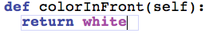
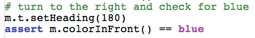

| This is the minimum amount of code to make the previous test pass. Of course it is not the correct code. We will verify that by turning the turtle to the right and checking that the color is blue. |
 |
| Here's your next failing test. |
 |